DRL4CONBOTS project page and README aligned with the pre-submission manuscript state.
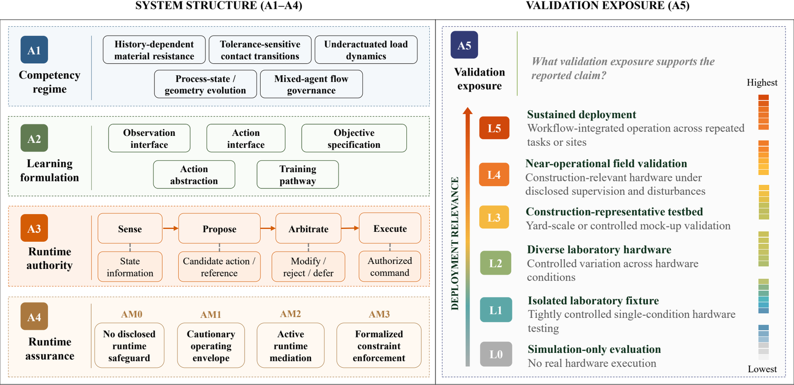
Pre-submission manuscript
152 system instances
75 primary DRL instances
A1-A5 codebook
DRL4CONBOTS | pre-submission project page
DRL4CONBOTS Evidence Map for Construction Robotics
Auditable evidence map for DRL construction robotics: 35/75 primary cases are AM0+L0, and 0 reach EVL L5 sustained workflow integration.
- 152
- system instances
- 75
- primary DRL instances
- 77
- contextual instances
- A1-A5
- claim-scope axes
Repository scope
DRL4CONBOTS is a paper companion, not a paper list.
The repository exposes the coding decisions behind the review: what was counted, how each system was classified, and where deployment-readiness claims stop. DOI, manuscript status, and public paper URL can be added after submission or archival release.
Repository status
Pre-submission materials
Figure previews and original PDF exports added under Assets/.
Matrix and JSON summary added for the evidence explorer.
Framework and taxonomy
Five coupled axes for claim-scope interpretation
The framework asks what evidence a disclosed robot-task-learning-authority configuration can support, not which algorithm name or application label sounds most advanced.
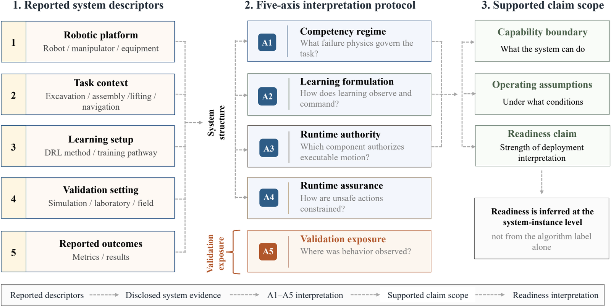
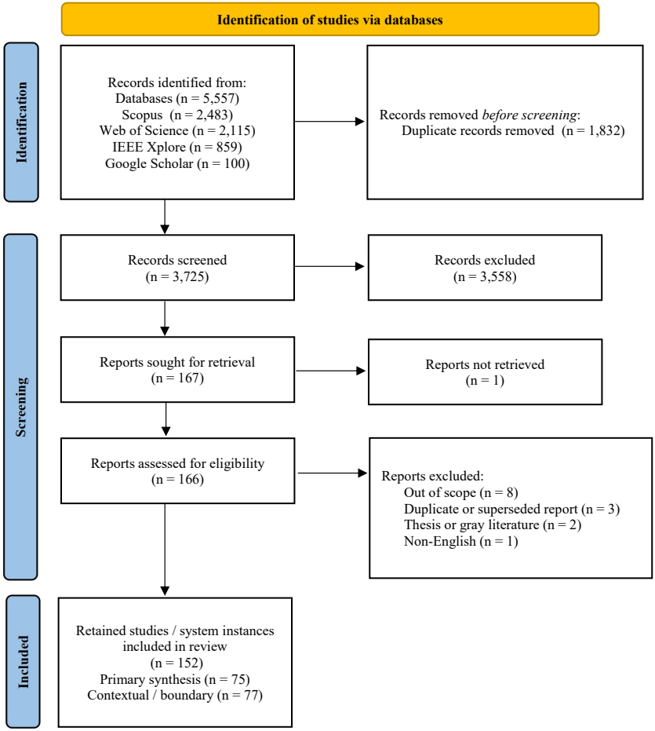
Competency regime
Dominant construction failure physics: earthwork, assembly, lifting, process transformation, or site logistics.
Learning formulation
What the learned component observes, commands, optimizes, and learns from.
Runtime authority
Who can authorize, modify, reject, defer, or execute motion commands through SPAE.
Runtime assurance
Whether safeguards remain active during execution through envelopes, vetoes, fallback, or formal enforcement.
Validation exposure
Where behavior is observed, from simulation-only studies to construction-representative testing.
Evidence by regime
Five regimes used to browse the matrix
Each regime groups systems by failure physics first, then lists representative records with bounded evidence notes.
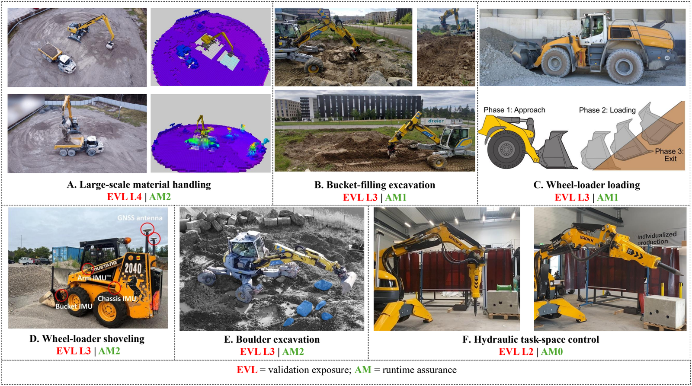
Earthwork and Material Processing
Soil, granular media, excavation, loading, grading, and hydraulic machinery.
- chen2025safe: AM3 hydraulic excavator tracking with barrier-Lyapunov constraints and hydraulic testbed validation.
- egli2024reinforcement: Isaac Gym bucket filling with randomized terrain envelopes and hardware trench missions.
- eriksson2024automatic: on-machine PPO adaptation for unknown wheel-loader materials.
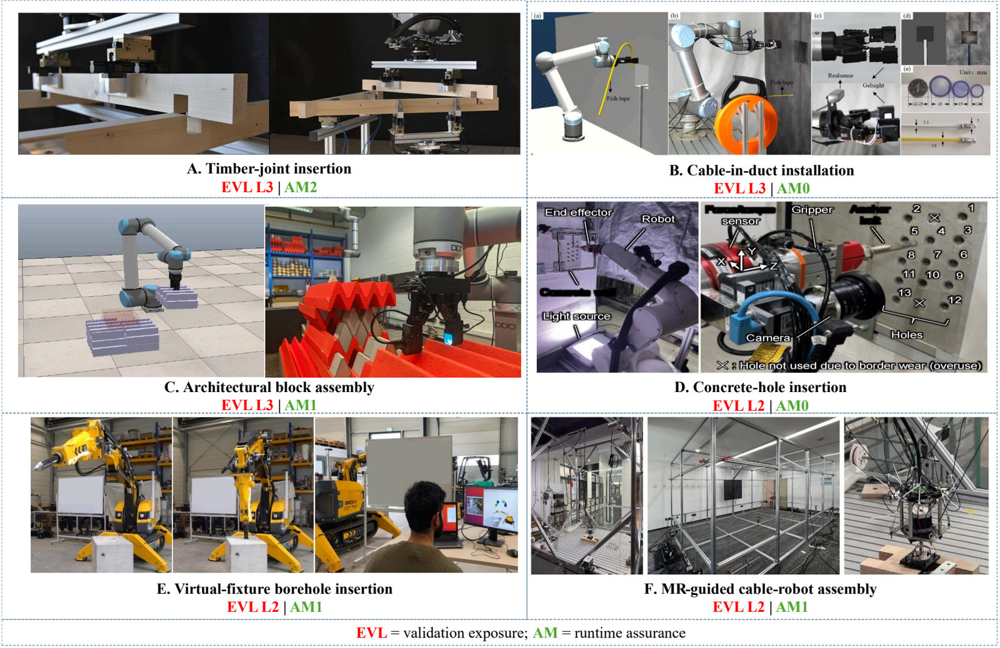
Structural Assembly and Installation
Contact-rich placement, joining, tolerance closure, and tactile installation.
- apolinarska2021robotic: force/torque-aware timber insertion with explicit abort limits.
- belousov2022robotic: tactile architectural assembly that exposes sim-fidelity limits.
- duan2025visual: cable-in-duct trials with GelSight sensing and sim-to-real tactile alignment.
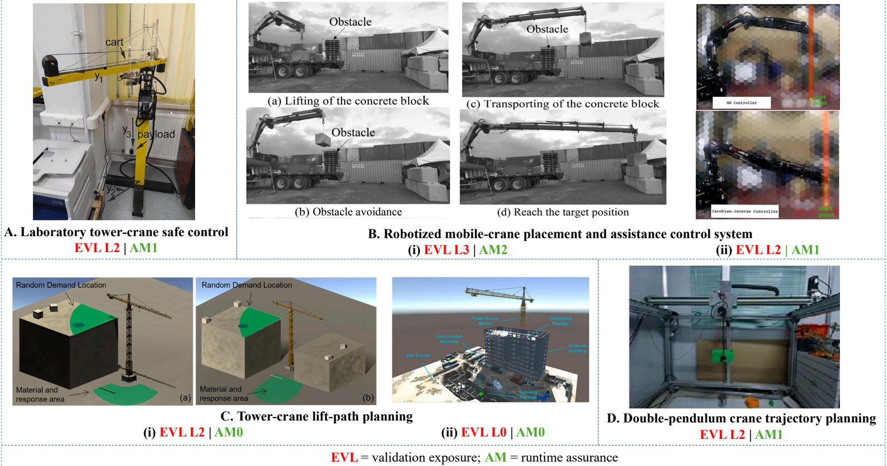
Material Placement and Lifting
Cranes, hoists, lift planning, suspended payloads, and sway control.
- Zhang2022: online actor-critic with passivity-based stabilizing terms.
- eaglin2023controlling: double-pendulum crane evidence showing RL-only sim-to-real weakness.
- cho2022reinforcement: tower-crane lift planning in real-scale virtual sites.
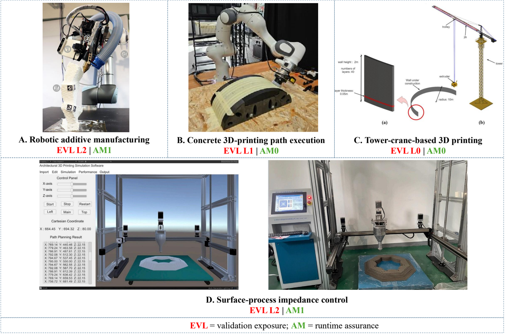
Additive Manufacturing and Surface Processing
Printing, path sequencing, material-state change, and process execution.
- felbrich2022autonomous: robotic additive manufacturing evidence coded as L2.
- wang_reinforcement_2025: concrete 3D-printing path sequencing with lab equipment execution.
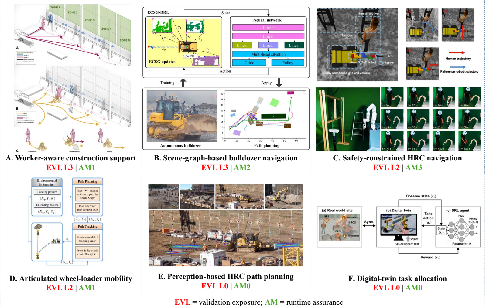
Navigation, Layout, and Site Logistics
Mobility, routing, human-aware planning, shared spaces, and site logistics.
- muafi2025vision: YOLOv8 plus PPO excavator navigation in Webots.
- babu2025stepping: HRL stepping templates and invalid-action masking for a walking excavator.
- cai2023prediction: worker-prediction-assisted DQN path planning.
Evidence trend
Taxonomy counts from the 152-instance matrix
Counts are loaded from Assets/evidence_summary.json, generated from the manuscript evidence matrix.
Sample source-coded instances
Figure atlas
Visual map of the paper
Each preview links to the original PDF figure used by the manuscript.
Fig. 1 Evidence translation
Reported outcomes become bounded claim scope through the five-axis framework.
Open PDFFig. 2 Review protocol
Identification, screening, exclusion accounting, and system-instance interpretation.
Open PDFFig. 3 Five-axis framework
How behavior is generated, authorized, mediated, bounded, and validated.
Open PDF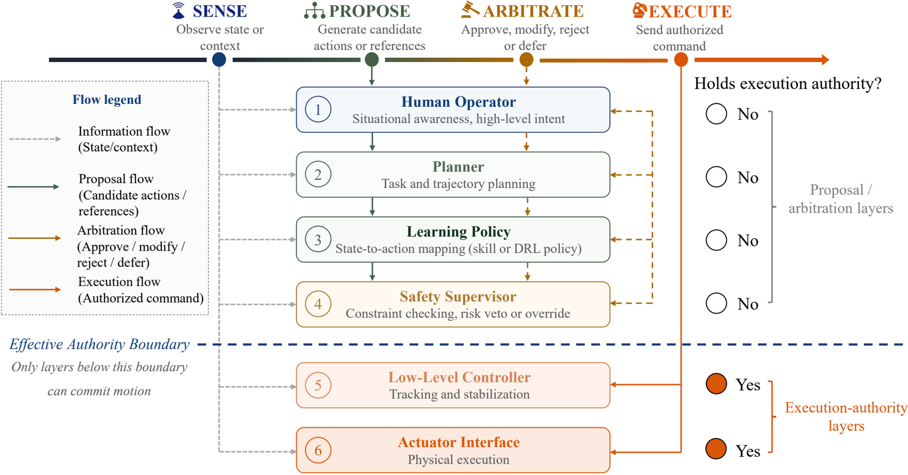
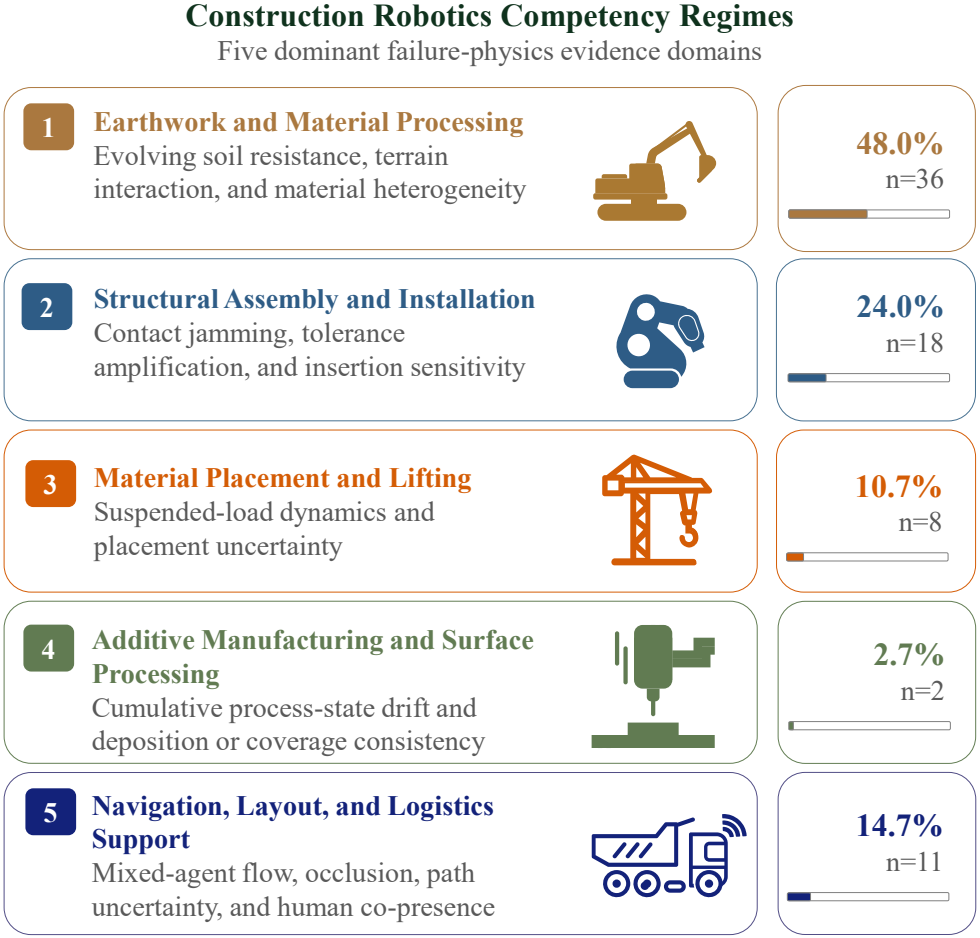
Fig. 5 Competency regimes
Regime separation by failure physics rather than application label.
Open PDFFig. 8 Lifting
Representative system-instance plate for suspended or dynamically coupled loads.
Open PDFFig. 9 Processes
Representative system-instance plate for material state and surface evolution.
Open PDFFig. 10 Logistics
Representative system-instance plate for shared-space and work-zone coordination.
Open PDF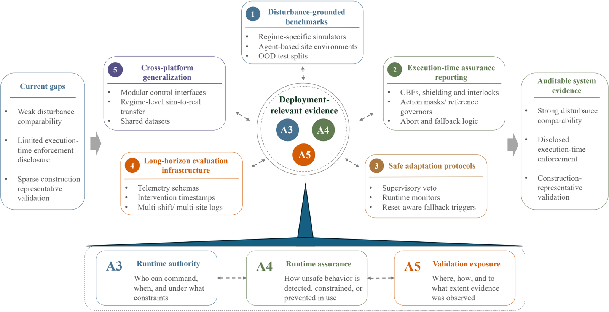
Fig. 11 Research roadmap
Evidence-closure path from gaps to disclosure instruments and documented system evidence.
Open PDFFiles
Files for inspection and reuse
These files make the review auditable before journal metadata or a paper DOI is available.
CSV
Evidence matrix
152 source-coded system instances with A1-A5, SPAE, AM, EVL fields.
JSON
Evidence summary
Counts and sample records used by this page.
FIG
Figure atlas
Eleven manuscript figures with PNG previews and PDF links.
MD
README
GitHub front page for the DRL4CONBOTS companion repository.
Concepts
Deployment-relevant DRL vocabulary
System-instance extraction
One paper may contain multiple robot-task-learning configurations; each instance keeps its own evidence boundary.
SPAE mapping
Sense, Propose, Arbitrate, and Execute roles expose where human, learned, and model-based authority sit.
AM0-AM3 assurance
Runtime assurance is coded separately from reward shaping, training constraints, or post hoc success metrics.
EVL ladder
Validation exposure separates simulation, simplified hardware, representative tests, and workflow-integrated deployment.
Disclosure checklist
What future studies should disclose
Regime physics and task boundary
Observation, action, reward, and training split
SPAE runtime responsibility allocation
Abort, reset, envelope, and fallback conditions
Physical validation exposure and site realism
Failures, interventions, and non-success cases
Cite
Citation and reuse
Use this DRL4CONBOTS pre-submission citation entry before journal metadata is available. Update the manuscript status, journal, year, DOI, URL, and license after submission, preprint posting, or archival release.
@misc{jinEvidenceMapDRLConstructionRobotics,
title = {Deep Reinforcement Learning for Construction Robotics: A System-Level Taxonomy and Evidence Map toward Real-World Readiness},
author = {Jin, Zekai and Wang, Huiguang and Tang, Yihong and Guo, Zhanyu and Sun, Lijun and Dong, Zhen and Feng, Chen and Shao, Yi},
year = {2026},
note = {Pre-submission manuscript companion repository; DOI and public URL to be updated after submission or archival release}
}